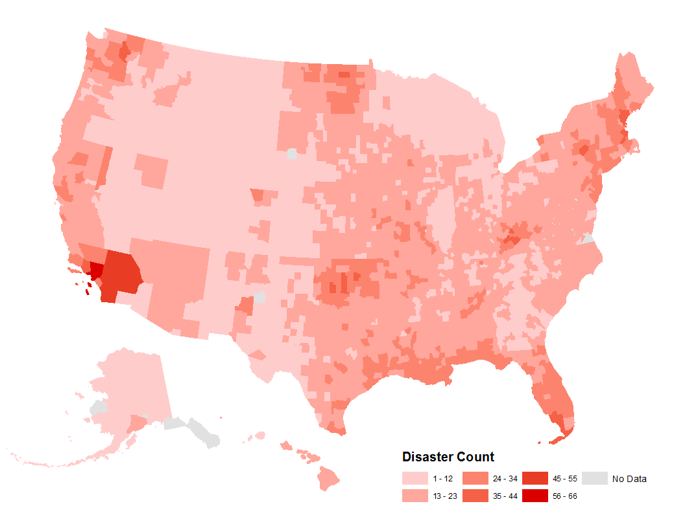

A disaster must be declared by the President of the United States to be considered a federally declared disaster. Federally declared disasters are significant events that require the assistance of the Federal Emergency Management Agency (FEMA), which is an agency of the U.S. Department of Homeland Security. A state may request for a Presidential disaster declaration if there is severe damage to an area that will require federal assistance in recovery.
Out of this incident list, what disasters are commonly feared the most? Perhaps events like tornados, earthquakes, volcanoes, and terrorist attacks. (Those certainly have the most films made about them!) But, statistically are these really the disasters happening in the U.S.? This first visualization is a simple bar chart showing the total number of each incident type that has been recorded out of ~50,000 events total. (Scrolling might be necessary to see the entire y-axis).
These next three visualizations look at the where and when of the last 65 years of disasters.
The first line graph shows how many total incidents have occurred each year from 1953 to 2018 and the second line graph breaks the incident numbers up by type. There are several interesting patterns here. First, the general lack of disaster events
between 1953 and 1964 is odd but it is likely explained by the fact that county level data was not available before 1964. Because of this, fewer total disasters were declared because it was done at a state level, even if multiple counties were affected.
Another caveat to consider with this data in general is that, according to the FEMA website, most of the data in this dataset is historic data that was entered into NEMIS when it began in 1998. This means the later data is probably more accurate because
it was recorded simultaneously with the disaster.
One additional note is that that 2005's Hurricane Katrina was declared a federal disaster in multiple counties across the U.S. (not just in counties that were directly affected). Therefore, the data for 2005 (specifically the hurricane data) is slightly
skewed to be higher than it really should be.
This dataset divides disasters into 22 incident types:
This project uses data from the U.S. Federal Emergency Management Agency's (FEMA) National Emergency Management Information System (NEMIS) to visualize disasters in the United States over the last 65 years. The data contains a summary of each federally declared disaster, in every county in the U.S. from 1953 to 2018. These data are not a record of all individual disasters, these are records of all the counties affected by all disasters and it is important to keep in mind that, in most cases, disasters do not affect one county alone.


To view an incident on the chart by itself, click the incident type in the legend and then click "Keep Only". Click the left arrow at the bottom of the graph to return the graph to its original state.
The third visualization is a map that shows the number of disaster incidents that have been declared in each state. Texas is the highest with 3,906 incidents while the District of Columbia has the lowest number of incidents with only 20. This map begins to reveal some geographic concentrations of disasters in the southeast and mid-west U.S.After looking at this data, I was very curious how location played a part in the prevalence of specific incident types. More specifically, is there a geographic pattern of incident types that has emerged over the last 65 years?
To answer this question, I created dot density maps for 8 of the incident types: severe storms, snow, hurricanes, floods, fires, tornados, earthquakes, and terrorists. Some of these are more prevalent than others, as seen in the maps.
Severe Storms
Total Incidents: 16,022
Snow
Total Incidents: 3,659
Hurricanes
Total Incidents: 9,841
Fires
Total Incidents: 3,006
Tornados
Total Incidents: 1,430
Earthquakes
Total Incidents: 105
Terrorists
Total Incidents: 5
Floods
Total Incidents: 9,624
Looking at these maps we can see some clear geographical patterns emerge. In general the eastern U.S. seems to have the highest concentration of the most prevalent disasters. You can see the common landfall locations for hurricanes, ranging from Texas
to the Northeast, the large numbers of storms and snow in the Northeast, and the concentration of tornados in the south and mid-west. On the west coast, you can see that there is a much higher prevalence for earthquakes, particularly in California,
and fires, particularly concentrated in Southern California.
The purpose for the inclusion of terrorist attacks is to provide a strong visual for how rare these types of disasters are, compared with the types of disasters shown which are much more common and widespread.
After seeing the general density of disaster incidents, my next question was "What counties have experienced the most disaster incidents and what counties have experienced the highest rate of each type of incident?". To look into this, I created 2 more
maps.
The first is a cloropleth map that shows the amount of incidents that have occurred in each county in a graduated color scheme from light to dark red. My initial hypothesis based on the dot density maps was be that the most dangerous county was somewhere
on the east coast, most likely the northeast. However, the most dangerous county, based on number of federally declared disasters is Los Angeles County, California with 66 federally declared disasters (46 fires, 7 floods, 6 severe storms, 3 earthquakes,
2 freezing, 1 coastal storm, and 1 hurricane (this was an evacuation warning for Hurricane Katrina that was nearly nation-wide).
The second map shows counties in the U.S. that have experienced the highest rate of each type of incident (incident types that have not occurred in a single county more than twice were not mapped). There are 3 counties, Los Angeles, Caddo, and Hawaii, that have had the highest rate of 2 disaster types!
Cartography by Jennifer Williams
Cartography by Jennifer WilliamsCartography by Jennifer Williams
The goal of this project was to examine the last 65 years of federally declared disaster data and display geographic and temporal trends via maps and other data visualizations. From these visualizations, we do see clear patterns emerge as the overall
number of disasters has increased in over time and disaster incident types have frequented the same geographical areas. Future endeavors would look to include population in these visualizations as well to view the types of disaster incidents that
tend to affect the most people. All of this information can help predict areas and populations that are at risk for more disasters in the future. Additionally, visualizing disasters gives people perspective on what types of incidents should be a cause
for concern (i.e. ones that occur frequently, mainly due to weather patterns and global warming) versus those that should probably not be at the forefront of concern (i.e. rare, extremely unlikely events such as terrorist attacks and chemical spills).
From a technical and cartographic standpoint, I utilized ArcGIS and Tableau Public to create all of my maps and visualizations. As mentioned previously, my main dataset is the disaster summary data from FEMA (which can be found here), I also used county level shapefiles from the U.S. Census Bureau (found here). All of the maps made in ArcGIS use an Albers Equal Area Conic projected
coordinate system (specifically, the North America, Hawaii, and Alaska projections).
To begin, I cleaned up the disaster data by deleting unnecessary columns. Next, I made a pivot table from the data so that the number of each disaster incident type was shown for every county. After that, I needed to join the disaster data and the
census data via a common field in order to make the maps. Initially, I thought using the county name would work; however, many states have counties with the same name so using county name would result in inaccurate incident numbers for each county.
Instead, I created a unique field in the disaster data file made from combining the state and county FIPS (Federal Information Processing Standard) codes (also found from the U.S. Census Bureau, here) so that each county had a unique value. Once those files were joined, I was able to start mapping!
I decided to use dot density maps for the different incident types to really highlight areas of low concentration and high concentration. I chose a dot density of 1 for 1 incident for all the dot density maps because the individual incident numbers
are not too large and 1 for 1 is the easiest for a map viewer to understand. Each map used a different color for the incident because I wanted to present all 8 next to each other.
I also wanted to show the difference in amount of incidents per county, so I used a cloropleth map with a graduated color scheme (from light to dark red) to show the increase in incidents, and danger. Finally, I created one more cloropleth map highlighting
only the counties that have the highest rate of each incident type (incident types that have not occurred in a single county more than twice were not mapped). I used a different color for each county (striped colors if the county was the highest for
2 incident types) and a callout that included the name of the county and state, what incident(s) types(s) it was the highest in, and the number of those specific incidents.
When making the tableau visualizations, my main focus was clarity of presentation. For the simple bar chart of total number of each incident type, I chose a dark red color to signify "disaster". For the line graphs, I used the same dark red for the
total number of incidents per year and a different color for each incident type for the incident type breakdown per year. I felt that this was the clearest way to present the data. For the incident numbers by state map, I used the same dark red color
again, this time as a graduated symbol to easily show which states have had more incidents than others.
Link to final project screencast (it is an unlisted video on YouTube)
Data Sources - U.S. Census Bureau & FEMA Information Source - FEMA
1 Dot =
1 Severe Storm(s) Incident
1 Dot =
1 Snow Incident
1 Dot =
1 Flood Incident
1 Dot =
1 Tornado Incident
1 Dot =
1 Fire Incident
1 Dot =
1 Earthquake Incident
1 Dot =
1 Terrorist Incident
1 Dot =
1 Hurricane Incident
By Jennifer Williams